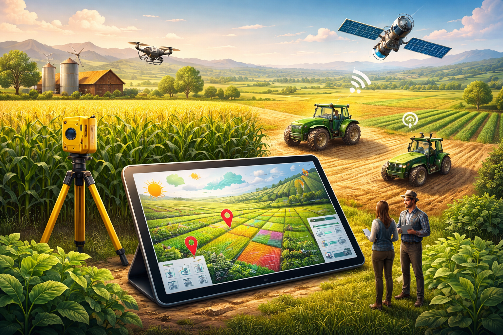

Geomática Básica Grupo 3
Universidad Nacional de Colombia - Facultad de Ciencias Agrarias
This course is a theoretical–practical undergraduate course that is taught as part of the Agricultural Engineering programme. It aims introducing students to the fundamental concepts, methods, and tools of geomatics and their application to the analysis and management of agricultural production systems. Throughout the course, students develop competencies in the spatial representation, analysis, and interpretation of environmental variables, strengthening spatial thinking focused on Agriculutre-related topics. By integrating conceptual foundations, guided practical workshops, and the development of a final project, the course promotes a critical and applied use of Geographic Information Systems and other geomatic tools to address real-world agricultural situations.
📢 News
Use this link LINK to join our virtual session on Thursday 5th 2026
📘 Course syllabus
The official course syllabus, which outlines the objectives, contents, learning activities, assessment criteria, and expected learning outcomes, is available online at the following link:
📚 Complete course content and learning activities
The detailed course content, including both synchronous and asynchronous activities, is available at THIS LINK . The accompanying document explains that each learning activity is organised around specific learning moments, designed to support the progressive development of knowledge and skills throughout the course.
- Engagement with information: Students will work with the documentation made available for study through the Classroom platform, as well as additional information they independently research.
- Peers discussion: Students will engage with their peers through activities focused on discussion, analysis, and collaborative knowledge construction.
- Expert dialogue: Students will participate in discussion sessions and question-and-answer activities with subject-matter experts to deepen their understanding of key concepts.
- Observation and experimentation: Students will carry out observation and experimentation activities aimed at reinforcing the theoretical concepts presented during the course.
📂 Workshops data folder
In this LINK you will find a folder with all the data required in the workshops
🏆 Grades
In this LINK you will access a spreadsheet with all your marks.
In addition you will receive individual in each submission